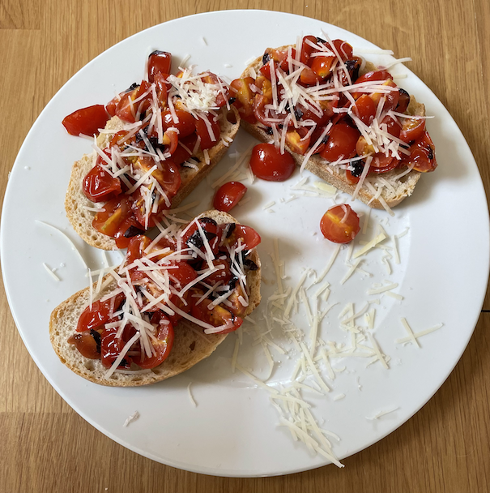

Bruschetta
Tomatoes
- Mix and leave to chill for 1 hour
- 300g cherry tomatoes quartered
- 2 tbsp olive oil
- 1 tbsp balsamic vinegar
- 1 glove garlic grated
- fresh basil leaves chopped (optional)
- 50g black olives quarter sliced (optional)
Cook
- Heat in oven at 160°C until bread toasted, about 12 mins
- ciabatta / sourdough cut into slices
- tomatoes
Assemble
- Cover with tomatoes with juice
- Extra dash (optional)
- olive oil
- balsamic vinegar
- Top with
- parmesan / mozzarella grated
- Sprinkle
Notes
- 70g tomatoes per slice of bread, 3 slices per person
- Can chop garlic and add to tomatoes instead of rubbing bread
